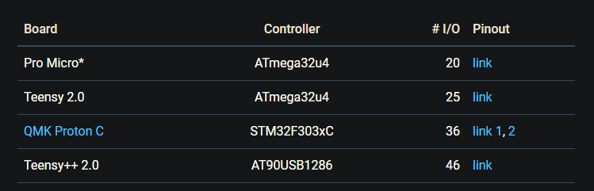
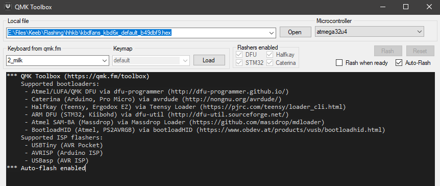
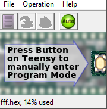

—「0X://Explanation」
A brief instructional about flashing those pesky micro controller chips. Only sufficient for programming Arduino and Teensy chips, but who uses anything else that would need my help.
Just to remember which controller goes with each board [image: here]

> These are just instructions for flashing a pro micro if i eventually flash a teensy i will leave instructions for that too
> First you need to download QMK toolbox which can be found here
> The rest is super simple, all you gotta do is select the .hex file you already made (if you haven't made on you aren't following this in the right order smh, see a project tutorial)
> now just enable auto flash, and short the rst and ground pins on the pro micro after plugging it in, it will flash the board and you are free to remove it now and it will function as a keyboard.

> A common issue i have seen b4 <
q> won't flash after shorting pins?
a> Try shorting it twice in quick succession, worked for me
> These are instructioins for flashing a Teensy 2.0++
> First you need to download Teensy Loader which can be found here
> The rest is super simple, all you gotta do is select the .hex file you already made (if you haven't made on you aren't following this in the right order smh, see a project tutorial)
> Then you just hit the auto box and press the button on the teensy, that is all!

> A common issue i have seen b4 <
q> wont work when flashed?
a> make sure when you programmed the firmware, that you selected AT90USB1286
┈ ren ♡